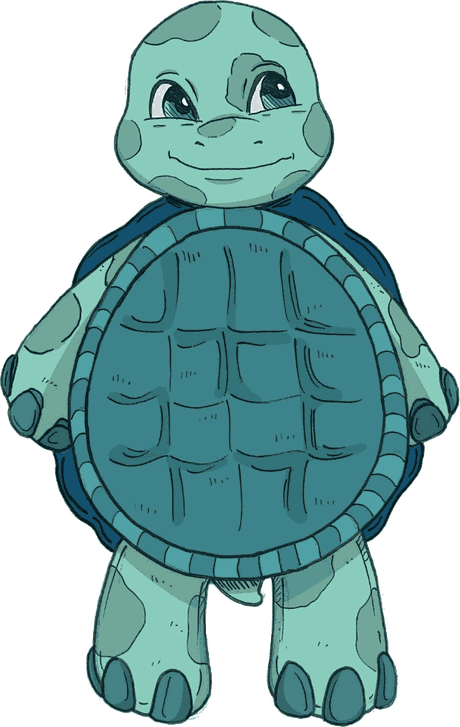

Olá!
Continue transformando pequenas atitudes em um grande impacto.
Pequenos gestos, grandes mudanças
Vamos reciclar hoje? Cada item conta!
Complete missões, suba de nível e conquiste selos a cada pequeno gesto pelo planeta.

0 dias seguidos
NÍVEL —
—
—
0 XP0 XP
Acesso rápido
Para onde você quer ir?
01 · Missões
Missões em destaque
02 · Jornada
Jornada do Reciclador
Conquistas
Selos e emblemas
conquistados ao longo da sua jornada.
03 · Histórico
Últimos registros
Missões
Missões diárias, semanais, mensais e especiais. A Jornada do Reciclador agora tem trilha própria.
Lista de missões
Jornada do Reciclador
Conclua um nível para liberar o próximo. Ao final do Nível 3, o selo especial é seu.
Trilha e etapas
Jornada do Reciclador: conclua os 3 níveis, em ordem, para conquistar o selo Primeiro Ciclo de Reciclagem.
Histórico de registros
Cada item que você registra e leva até o ponto de coleta vira uma pequena vitória para o planeta.